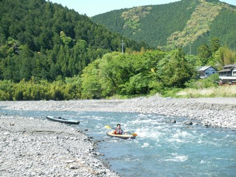
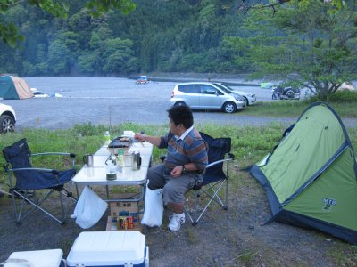
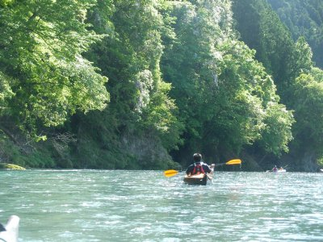
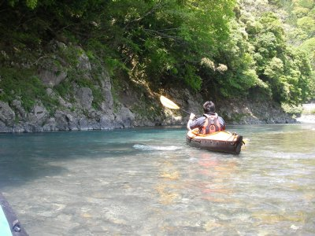

気田川カヤック | 2013年5月 |
|---|---|
| 今回は、気田川というカヌーをやる人達の間では有名な川で、浜松の北側あたりです。 １日目、川を2時間くらい下り、川の畔のキャンプ場にて宿泊 2日目、キャンプ場からスタートして3時間ぐらい と、こんな感じです。 私は初めてですが、誘ってくれたmaruさんは、下ったことが有るというので一安心♪ | |
 ここから出発します |  ザラ瀬は回避 |
| １日目 艇を組み立てて、13時くらいにスタート。天気快晴。ホントに雲一つ無く素晴らしい！ 川下りで恐いところは、川の流れがカーブで岩やテトラポッドにぶつかるところ。流されて張り付いちゃうと抜け出せなくなっちゃう。また、水に隠れた岩とか。我々の艇はビニールのような布で出来ているため、傷つくと破れちゃう。隠れた岩は直前で気がつくことが多く、回避が困難。 艇が川の流れの横向きになり、横から水を食らうと直ぐ転覆しちゃうって事も大変。ホントにコロンって感じでひっくり返ります。 その点、プラスチックで出来た艇や、ゴムボートのような艇は楽ちんそうだ。 幾つかの瀬を越えて、アドレナリンが徐々に出てきたころ、川と川が90度くらいでぶつかっている所に遭遇。ソコを勇敢に挑む我らがmaruさん。 水の合流部にさしかかったところ、艇の横下部に水を食らったらしく、あっけなく横転！ いや〜全身ずぶ濡れだ〜 それを笑いをこらえながら動画で撮っていた私♪ 予定通り2時間ぐらいでキャンプ場へ。 2時間だけだけど、凄い疲労感が・・・・ この日はお風呂入りに行って、バーベキューして就寝。 | |
 中に入った水を抜いてます |  キャンプ場でビールと焼肉 |
| 2日目 朝から下痢・・・・・でも、他は大丈夫。 実は心配だったのは、家族間で流行っている「ロタウイルス」。昼間預かっている甥っ子がかかり、姪っ子がかかり、その両親に移って、2日前ほどお袋が発病・・・ ロタウイルス・・幼少期に掛かることが多いウイルス性で、下痢や嘔吐、発熱と言った症状ですが、大人も掛かるそうです。感染します。 もしやと思ったが、俺もかかったか・・・・ 不安はあったが、そのまま出発。なんか下痢も止まったみたいだし・・・ 2日目のコースは、1日目より瀬が浅いけどスピードがある感じです。つまり、考えるより早く瀬に近づき、「あ、岩発見！」って遅すぎでしょう！ って感じになるんですよ。 真っ直ぐな流れだけど、途中落ち込んでいるように見える。右側が明らかに浅い。かといって左よりは竹が川の中に倒れ込んでいる。 これは、竹よりのギリギリを狙うのがベスト！ そう睨んでコースイン！ 落ち込みを回避、竹の過ぎ右を・・・右を・・・右・・・やっべー竹側に吸い寄せられる！！！ 張り出した竹に、ゴツンと頭をぶつけ「あいた！」と叫んでいるウチに、艇の先端が水中に刺さっている太い竹に引っかかり、「やばいやばい」と言うまもなく、艇が横向きに、川の流れを横っ腹に食らって、そのまま横転・・・・・ なんとか竹に引っかかったままにならずに済んで水中へ。 maruさんに続いて私も沈・・・・ この時、帽子無くしました。 3時間コースを2時間下ったところで、二人とも「今回はここで勘弁してやろう」と、川にリベンジを約束して上陸。 本来の上陸地点とは違ったので、maruさんが歩いて車まで行ってくれました。 いや〜、気田川侮れない！ って、私らがフォールディングカヤックだからか？ ポリ艇やボム艇は、みんな笑いながら下ってるぞ？！ でも、水に沈してもスゲー楽しい！ またやりたい！ maruさん、また行きましょう！ ・・・でも、ポリ艇欲しいぞ・・・ 改めて見ると、今回、写真や動画少ないな〜編集できるかな？？ | |
|  いや〜気持ち良いな〜 |  水が綺麗なんですよ |
| 写真＆コメント ｂｙ べっしー | |